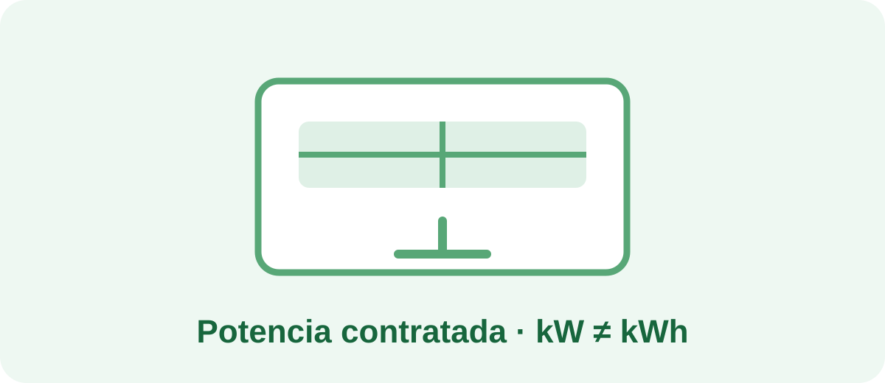

La potencia contratada está relacionada con la cantidad máxima de potencia que puedes utilizar simultáneamente según las condiciones de tu suministro. Reducirla puede tener sentido si tus necesidades han cambiado, pero conviene comprobarlo antes.
El consumo se expresa normalmente en kWh y depende de la energía utilizada a lo largo del tiempo. La potencia contratada se expresa en kW y está relacionada con la capacidad de uso simultáneo.
Revisa tus facturas y, si tienes acceso a los datos de potencia demandada de tu suministro, observa los máximos registrados. También puedes pensar qué aparatos utilizas al mismo tiempo en momentos de mayor demanda.
Horno, vitrocerámica o inducción, termo eléctrico, aire acondicionado, radiadores eléctricos, lavadora, lavavajillas y otros equipos pueden coincidir. La situación concreta depende de tu vivienda y de tus hábitos.
Comprueba primero las condiciones y posibles costes aplicables a tu contrato con tu comercializadora o distribuidora. Después compara el ahorro esperado con cualquier coste de modificación.
Si tu objetivo es reducir la factura, recuerda separar dos conceptos: la potencia contratada y el consumo en kWh. Consulta nuestra guía general de ahorro para revisar otros consumos antes de tomar decisiones.
Reducir la potencia contratada no significa consumir menos kWh automáticamente. Es una decisión relacionada con la capacidad de uso simultáneo y debe basarse en tus necesidades reales.